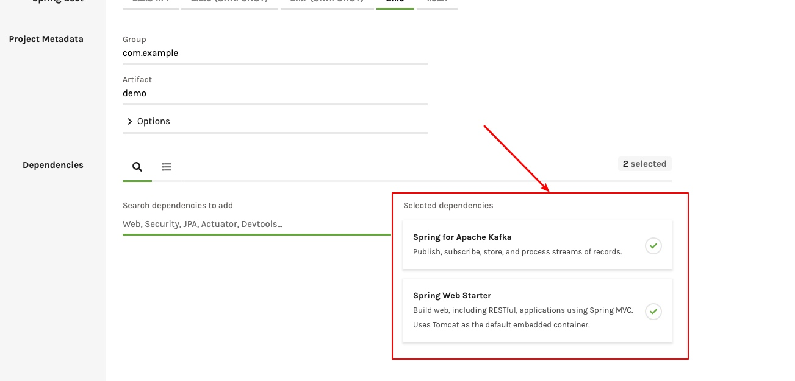
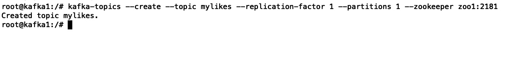
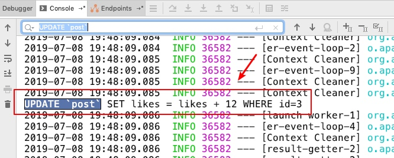

在页面上每次点赞，把这个被点赞的文章id发送到kafka，然后通过spark streaming读取kafka里的数据，统计出点赞的数量，更新回mysql中

完整案例代码已上传github：https://github.com/neatlife/mySparkLikes
获取案例项目
可以在https://start.spring.io上创建项目

这里加上web-starter, kafka-starter即可，spark和spark kafka streaming相关以来需要手动添加，并没有对应的starter可用
然后在pom.xml中引入kafka的客户端和spark streaming的客户端
<!--spark相关依赖-->
<dependency>
<groupId>org.apache.kafka</groupId>
<artifactId>kafka_2.10</artifactId>
<version>0.8.2.1</version>
</dependency>
<!-- https://mvnrepository.com/artifact/org.apache.spark/spark-streaming-kafka -->
<dependency>
<groupId>org.apache.spark</groupId>
<artifactId>spark-core_2.10</artifactId>
<version>1.6.2</version>
</dependency>
<dependency>
<groupId>org.apache.spark</groupId>
<artifactId>spark-streaming_2.10</artifactId>
<version>1.6.2</version>
</dependency>
<dependency>
<groupId>org.apache.spark</groupId>
<artifactId>spark-streaming-kafka_2.10</artifactId>
<version>1.6.2</version>
</dependency>
把点赞的postId发到kafka
上手kafka可以参考: https://juejin.im/post/5d159d4ff265da1bab29c1aa
创建kafka的topic，比如这里使用mylikes这个topic
kafka-topics --create --topic mylikes --replication-factor 1 --partitions 1 --zookeeper zoo1:2181
操作效果如下

新增一个点赞接口，核心代码如下
@RequestMapping("/send-like")
public String sendLike(@RequestParam(value = "post_id", required = true) Integer postId) {
producer.send(postId);
return "test1";
}
kafka发送核心代码如下
public void send(Integer postId) {
ProducerRecord producerRecord = new ProducerRecord(topic, postId.toString(), "1");
this.kafkaTemplate.send(producerRecord);
System.out.println("Sent sample postId [" + postId + "] to " + topic);
}
记下这里使用的kafka的topic：mylikes，在spark里也需要使用这个topic
这里注意发送到kafka的key和value都是字符串，id和点赞数是int，所以在spark进行处理时需要做这个类型转换
在spark中从kafka中读取数据计算点赞量
创建从kafka中读取数据的spark客户端
SparkConf conf = new SparkConf()
.setAppName("mySparkLikes")
.setMaster("local[*]")
.set("spark.default.parallelism", "15")
.set("spark.streaming.concurrentJobs", "5")
.set("spark.executor.memory", "1G")
.set("spark.cores.max", "3")
.set("spark.local.dir", "/tmp/mySparkLikes")
.set("spark.streaming.kafka.maxRatePerPartition", "5");
Set<String> topics = Collections.singleton(topic);
Map<String, String> kafkaParams = new HashMap<>();
kafkaParams.put("metadata.broker.list", "127.0.0.1:9092");
JavaStreamingContext jsc = new JavaStreamingContext(
new JavaSparkContext(conf),
Durations.seconds(3));
jsc.checkpoint("checkpoint");
创建kafka数据流
// 得到数据流
final JavaPairInputDStream<String, String> stream = KafkaUtils.createDirectStream(
jsc,
String.class,
String.class,
StringDecoder.class,
StringDecoder.class,
kafkaParams,
topics
);
System.out.println("stream started!");
stream.print();
stream.print() 触发读取数据
将kafka里的字符串类型的postId和点赞次数转成整数类型
JavaPairDStream<Integer, Integer> countDStream = stream
.transformToPair(new Function<JavaPairRDD<String, String>, JavaPairRDD<Integer, Integer>>() {
@Override
public JavaPairRDD<Integer, Integer> call(JavaPairRDD<String, String> stringStringJavaPairRDD) throws Exception {
return stringStringJavaPairRDD.mapToPair(new PairFunction<Tuple2<String, String>, Integer, Integer>() {
@Override
public Tuple2<Integer, Integer> call(Tuple2<String, String> stringStringTuple2) throws Exception {
return new Tuple2<>(new Integer(stringStringTuple2._1), new Integer(stringStringTuple2._2));
}
});
}
})
.reduceByKey(Integer::sum);
生成点赞次数的sql语句
countDStream.foreachRDD(v -> {
v.foreach(record -> {
String sql = String.format("UPDATE `post` SET likes = likes + %s WHERE id=%d", record._2, record._1);
System.out.println(sql);
});
log.info("一批次数据流处理完： {}", v);
});
启动流计算
jsc.start();
添加一个接口来调用上面的代码
@RequestMapping("/launch")
public String launch() {
sparkLikeService.launch();
return "test2";
}
先访问/launch来启动流计算引擎，然后访问send-like接口生成点赞数据，查看控制台生成的sql语句，操作效果如下

可以看到已经拿到了点赞数的sql，可以使用jpa把这个点赞数据存放到数据库中了
本地调试
这个spark的job可以本地调试，但是需要满足以下几个条件
- spark需要在本地启动
- job连接master的地址需要是：local[*]
参考资料
- https://www.iteblog.com/archives/1381.html
- https://github.com/eBay/Spark/blob/master/external/kafka/src/main/scala/org/apache/spark/streaming/kafka/KafkaCluster.scala
- https://blog.csdn.net/guotong1988/article/details/50555671
- https://www.4spaces.org/spark-map-flatmap/
- https://blog.csdn.net/wuxintdrh/article/details/71123359